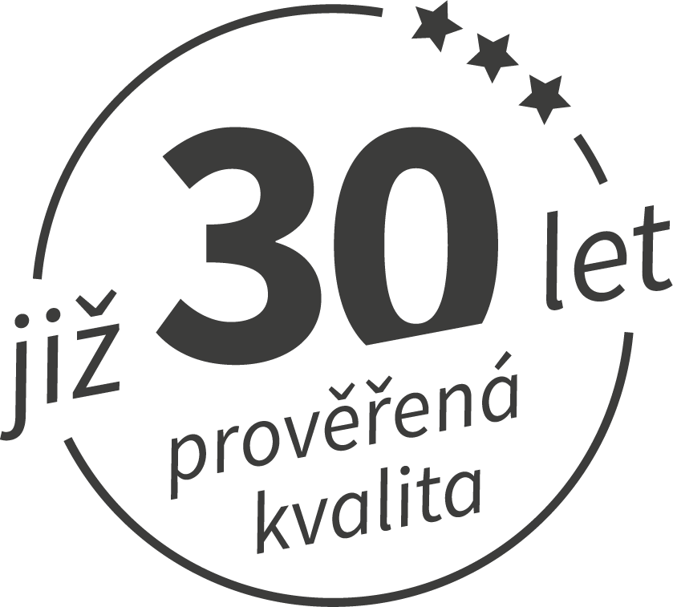
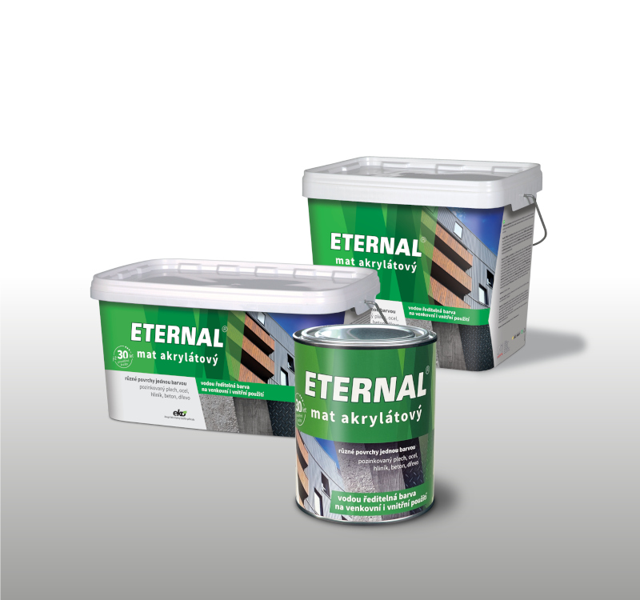
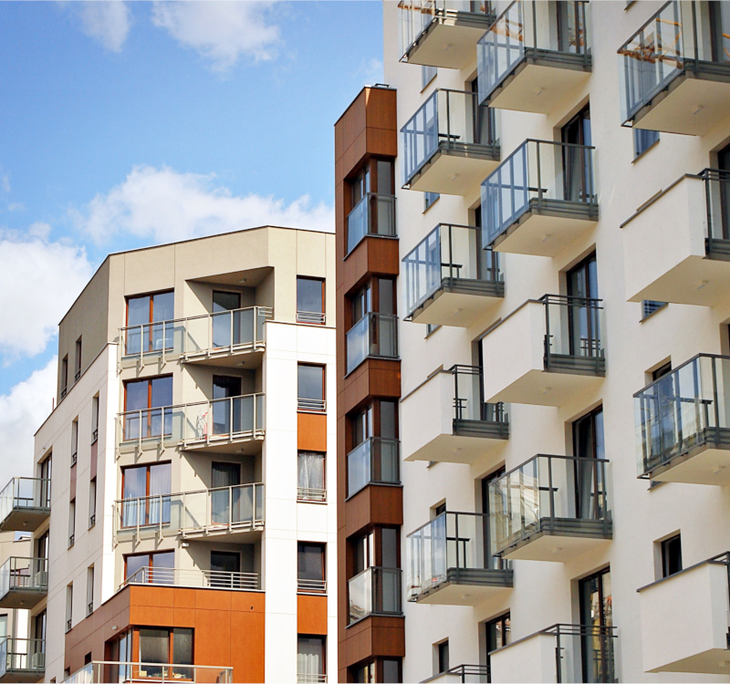

Přední český výrobce stavební chemie a generální dodavatel staveb
Vyvíjíme a vyrábíme ekologické vodou ředitelné barvy a hydroizolace ETERNAL. Zajišťujeme komplexní dodávky pozemních staveb, technický dozor investora (TDS) a profesionální facility management.


Čtyři klíčové pilíře AUSTIS a.s.
Synergické propojení vývoje chemických hmot, stavební realizace a komplexní správy areálů.
Výroba stavební chemie
Vývoj a výroba nátěrových hmot, hydroizolací a laků ETERNAL a SANAKRYL. Vlastní moderní laboratoře a receptury s certifikací ISO 9001.
Stavební divize (APS)
Generální dodávky novostaveb, komplexní zateplování fasád bytových domů, sanace betonů a hydroizolace plochých střech.
Technický dozor a BOZP
Nezávislý technický dozor stavebníka (TDS) a koordinace bezpečnosti práce na staveništi dle zákona č. 309/2006 Sb.
Správa nemovitostí (REAL)
Facility management a technicko-ekonomická správa pro bytová družstva, SVJ a komerční objekty s nepřetržitým dispečinkem 24/7.
Ekologické vodou ředitelné nátěrové systémy
Značka ETERNAL je synonymem pro spolehlivou ochranu stavebních konstrukcí, střech, podlah a kovových povrchů. Díky vodou ředitelným recepturám minimalizujeme obsah těkavých organických látek (VOC) a chráníme zdraví aplikačních pracovníků i životní prostředí.
- Hydroizolace střech a teras s vysokou pružností
- Antikorozní nátěry na zkorodovaný i pozinkovaný plech
- Otěruvzdorné podlahové nátěry pro garáže a dílny
- Certifikováno Technickým a zkušebním ústavem stavebním Praha (TZÚS)
Katalog divizí a produktových řad
Prohlédněte si ucelené technické specifikace jednotlivých oblastí činnosti AUSTIS a.s.
Výroba stavební chemie a nátěrových hmot ETERNAL
Přední český výrobce vodou ředitelných nátěrových systémů pro střechy, podlahy, fasády a kovové konstrukce.
Divize Realizace staveb (APS AUSTIS)
Generální dodávky pozemních staveb, revitalizace bytových domů, zateplování fasád a průmyslové rekonstrukce.

INZENYRINGTechnický dozor stavebníka (TDS) a Koordinátor BOZP
Nezávislá expertní kontrola kvality, prostavěnosti a bezpečnosti práce na staveništi dle zákona č. 309/2006 Sb.
Správa nemovitostí a facility management (AUSTIS-REAL)
Komplexní ekonomická, právní a technická správa bytových domů, SVJ, bytových družstev a komerčních areálů.
Certifikovaný systém řízení jakosti
Naše výrobní i stavební procesy podléhají pravidelným nezávislým auditům a etickému kodexu.
ISO 9001 Systém řízení jakosti
Garance špičkových parametrů každé šarže barev a stavebních prací s pravidelnou kontrolou výstupní kvality.
ISO 14001 Environmentální řízení
Systematické snižování energetické náročnosti výroby, recyklace obalů a bezodpadové hospodaření.
Etický kodex a Whistleblowing
Transparentní obchodní vztahy, dodržování zákonných norem a podpora férového podnikatelského prostředí.
Kontakt na vedení a obchodní divize
Rádi s Vámi probereme požadavky na stavební chemii, dodávky staveb nebo správu objektů.